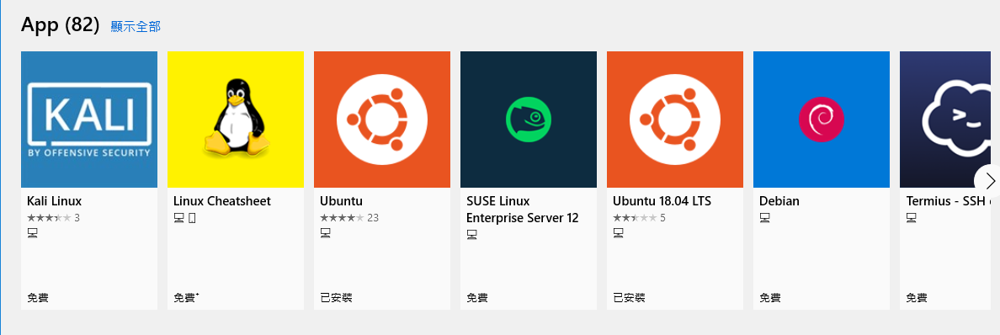
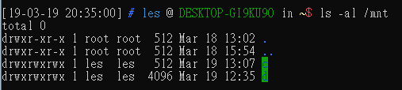
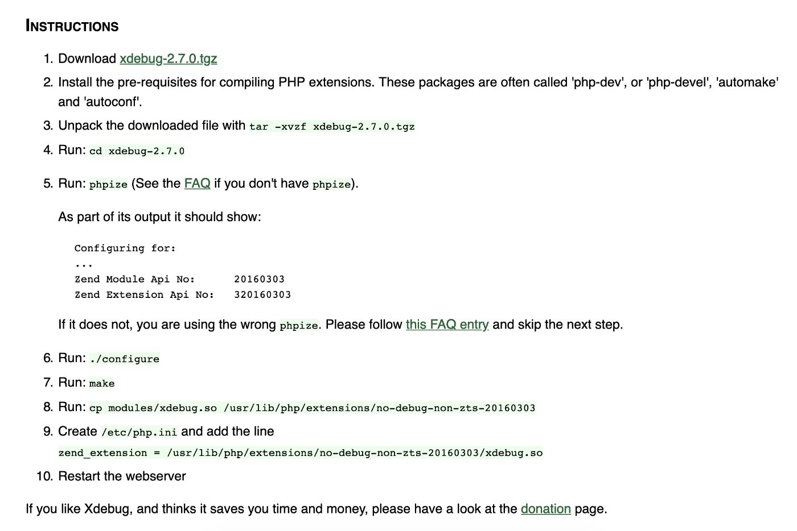
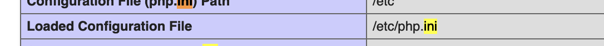

# WSL 與 Windows 的完美雙結合 —Windows 10 下使用 VSCode 調用 WSL 對 PHP 專案 Debug
# 當 Windows 擁有了 Linux ，Mac OSX 還會是對手嗎？
,
Windows 10 的問世，迎來了一項革命性的功能 —Windows Subsystem for Linux 簡稱 WSL。
這個功能可以讓我們可以不須再使用 Virtual Box 等虛擬機安裝 Linux 系統，直接在 Windows 上執行 Linux 環境。
由於 WSL 採用系統核心 API 轉譯的方式執行，所以我們可以像使用原生 Linux 一般地使用 WSL 。
另外，雖然兩個環境互相獨立，但是我們依然可以通過特定的路徑自由地在兩地相互存取各自的檔案內容。因此經過適當的環境配置，便可以做到 在A地開發，在B地調試 的效果。
這對於習於使用 Linux 的開發者來說真是一大福音。(因為 Windows 的 shell 一直是出了名的難用。)
這篇文章主要便是紀錄我如何調試 WSL 讓我能在 Windows 上使用 Vscode 開發，並且在 Linux 上執行與除錯 php project。
# 安裝
先講講安裝 WSL。Windows 10 安裝 WSL 是輕鬆愉快的。但是在開始之前，我們要先手動開啟 WindowsOptionalFeature ，這在預設中是關閉的。
請使用系統管理員身分執行 PowerShell ，並且輸入指令，完成後需要重新開機一下。
1
Enable-WindowsOptionalFeature -Online -FeatureName Microsoft-Windows-Subsystem-Linux
Windows 10 之後推出的新的 shell 程式，但是依舊沒有很好用
之後我們就可以直接在 Windows Store 上選擇自己喜歡的 Linux 版本來進行安裝了。

基本上主流的 Linux 系統都有，可以任君挑選
# 互相存取資源
- 在 Linux 中存取 Windows 資源
Windows 磁區 在 Linux 中是以類似掛載的形式存在的，我們可以對 Root 路徑下的 mnt 資料夾進行訪問以存取 Windows 端的資料。
以我自己的 Windows 為例，由於我的 Windows 有 C:\ 與 D:\ 兩個磁區，因此在 Linux 中我可以使用 /mnt/c 或 /mnt/d 獲取 C:\ 或 D:\ 的資源。

要注意的是，由於 C:\ 有受到讀寫保護，因此只能讀不能寫。
- 在 Windows 中存取 Linux 的資源
Windows 對於 WSL 的支持是非常強大的。簡直就是 吳·鳳·接·合 。我們可以直接在 Windows 環境直接執行 Linux 內的各種指令。甚至是直接使用 Vscode 開啟 Linux 中的文件。
我們可以使用 wsl 將 windows shell 切換為 wsl 環境。
1
wsl
執行 wsl 環境中的指令
1
wsl [command]
舉個例子
- 使用 Linux 的 grep 過濾 PowerShell 的執行結果
1
PS> Get-Service | wsl grep -i winrm
- 使用 SSH 連線至遠端
1
wsl ssh user@ip
甚至，我可以直接在 Linux 中直接執行 code . 透過 Windows 的 Vscode 開啟 Linux 中的專案。
介紹完了 WSL 的使用後。我們終於要進入正題了。
建置 WSL 的 PHP 開發環境，並且通過 Windows 的 Vscode 對其偵錯
首先在 WSL 中建置 PHP 跟 Apache (Nginx)，這部分應該不用多做說明，有疑問的可以參考我以前的文章 設定 LEMP server 在 Debian 9 Linux
# 安裝 PHP Debug 工具
當環境架好後，我們先在 www/html/ 路徑中，寫一支 phpinfo.php ，用以輸出我們的 php 環境與版本。
1
2
3<?php
phpinfo();
?>
當開啟網頁後應該會看到如下類似的畫面
之後回到 Vscode 的 Extension 中找尋 php debugger 並安裝。
安裝完後，這個外掛本身並不能直接執行。我們需要另外安裝真正的 php debug 工具 — XDebug
依照這個 extension 的安裝說明。我們點選其中所附的 XDebug 連結。
之後我們會來到這樣的畫面。
我們將剛剛得到的 phpinfo 整份網頁 全選 並且直接 貼上 至這個 Textarea 中。這個網站會自動分析你的 php 執行環境，並且給予適當的 XDebug 安裝方法。
由於我們的 php 是安裝在 WSL 上的，因此理論上安裝方式應該與下圖相似。

依照網站的步驟在 WSL 安裝完畢後，我們要開啟 php 路徑下的 php.ini
如果不知道 php.ini 的位置路徑，可以從 phpinfo 中找到。

在 php.ini 中加入以下內容
1
2
3[XDebug]
xdebug.remote_enable = 1
xdebug.remote_autostart = 1
之後，重啟 apache (nginx)。
# 讓 Windows 中的 php project 跑在 WSL 中的 php 環境
我們可以使用 symbolic link 的方式將專案 link 到 WSL 中的 www/ 內，如此便可以將 Windows 的 php 專案跑在 WSL 的 php 環境了。
以我自己為例，我便將 project 放置於 /var/www/ 中
1
ln -s /mnt/<your project path>/<your project> /var/www/
# 使用 Windows 中的 Vscode 執行 WSL 中的 XDebug 對 php project 偵錯
第一次，我們先在 Vscode 中的 Debug 環境中點選上方小齒輪，並且選取 PHP 。
這會讓 Vscode 自動生成 Debug 設定檔。
預設應該會長這樣，一般情況這樣就設定完成了，但是由於我們需要讓 XDebug 知道我們要在哪裡 Debug，因此我們在其中多增加一段設定 — “pathMappings”: {}
我建議將專案放在 D:\ 。因此在此處我將 pathMappings 路徑位置設定在 D:\ 。
接下來存檔、離開，就可以測試看看是否真能開始偵錯了。
# 結語
之前就有聽聞 Windows 10 可以原生安裝 Linux 。
直到今日由於工作所需，嘗試了一下才發現這不僅僅「只是讓 Windows 可以安裝 Linux 」這麼簡單。
Windows 將這個 Linux 的支援性做得非常的到位，並且可以很輕鬆的兩地互相操作。這著實讓我非常驚艷。
目前這幾天的使用情況感覺是不錯的。未來我應該也會繼續探索。
當 Windows 可以原生擁有 Linux，我覺得 MacOS 的 Unix Like 的優勢又少一項了。